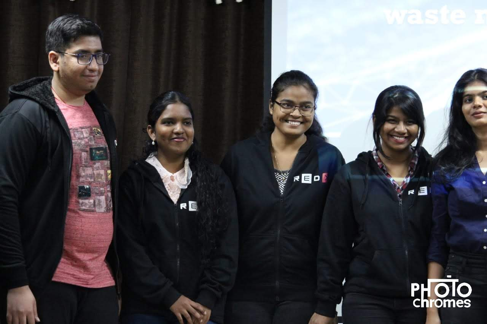

Shubh Hemnani AND TEAM MEMBERS
Working on :
ARTIFICIAL INTELLIGENCE FOR FLORAL WASTE MANAGEMENT AND ITS UTILIZATION.

Change cannot be seen and achieved in one single day it needs proper planning and execution , Ramesh Raskar sir introduced us to such a great , efficient and accurate idea of planning and execution of our new ideas i.e the spot-probe method of 10weeks it was like a highway for our new ideas. The way he showed us the power of technology was really great and we could find out 1000's of opportunities in it and can change the lives. Right from going cashless to portable medical devices technology and digitalization has changed the world and a new era of automation has begun. The most amazing point for me and my team was the cycle of excitement , boring and comfort zone it clearly explains how our new ideas can get a thrust and track for its application. Every single day world needs modification and updation this is only possible through research and application of new idea and in turn the process has many opportunities hidden in it.
The temples owned by government bodies or parties are reluctant to share information about the trustees and any vendors.According to locals, there are no regular flower vendors. They may come or may not. So the flowers are brought by the locals visiting the temples.Temples owned by big organizations provide the flowers but are reluctant to share the source.Some temples own their personal garden but access to it is not allowed.The temple attendants get offended when asked about the flower source. Few temples lie on the outskirts of the city so the access gets difficult.
26th JUNE ,29Th JUNE and 30th JUNE 2019 As part of our project on ‘AI For Floral Waste Management And Its Utilization’ our team conducted a survey . The survey was divided into 2 sections A]Survey on textile and dying industry in which we covered 2 industries namely Siddhivinayak Chemicals and Dyes (mulund) and MJ Jeans (ambernath) B]Survey on temples in which we covered 9 temples and 2 flower markets viz. chaliya sahib mandir [unr] , shanti prakash ashram [unr], titwala ganpati temple [titwala] , ram mandir [matunga] , siddhivinayak temple [dadar] , mahalaxmi temple [Mumbai-west] ,isckon [juhu and kharghar] , jagannath temple [kharghar] and matunga , dadar flower market respectively.
We got to interact with many people and got the real image of situation , all these interactions were very helpful and gave us the clear idea of future of our project and also provided us track to work further on our project